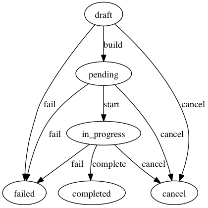

Class: Lims::Core::Organization::Order
- Inherits:
-
Object
- Object
- Lims::Core::Organization::Order
- Includes:
- Resource
- Defined in:
- lib/lims-core/organization/order.rb,
lib/lims-core/actions/create_order.rb,
lib/lims-core/actions/update_order.rb,
lib/lims-core/organization/order/item.rb
Overview
An order represents the idea of 'work to be done'. However, an order focuses more on the final outcomes than the steps to achieve it. The way to fulfil this order is specified via a `pipeline` and its `parameters`, which *knows* how to do it. This allows the flexibility for a pipeline to adapt its process without having to modify the corresponding order. The current progress of the order - what has been done so far - is then no stored as "what steps have been done", but more as "which items exits". To make this work ,we also needs to know how each items participates in the order, meaning its `role`. For example, in the case that user U needs sample S to be sequenced, what we need to know is we have sample S as a *source* and want we want a sequence as result. To do so, we need to create a library from the sample. Once this library is created, it becomes part of the order as *library*. The pipeline will then know that the *library* has been created and that the next step can start. Note, there is no relation at a core level between this sample and this library. The pipeline knows that this *sample* is linked to that *library*. Ultimately, someone wanted to sequence an existing library, can create an order with the same parameters, with the *library* given instead of the *sample*.
State Machines
This class contains 1 state machine managed by the state_machine gem.status
Defined Under Namespace
Classes: Item
Constant Summary
- Create =
Actions::CreateOrder
- Update =
Actions::UpdateOrder
Instance Method Summary (collapse)
-
- (Object) [](key)
Items ======== Redirect key to either items or attributes (default Virtus behavior.
- - (Object) []=(key, value)
-
- (Object) add_item(role, item)
Add an item to the specified role Ideally, uuid should be unique within a role.
-
- (Item) add_source(role, uuids)
A source is an item required to complete the order.
-
- (Item) add_target(role, uuids = nil)
A target is an item produced by the order.
-
- (Boolean) key_is_for_items?(key)
private
Check if the argument is a key for items or attributes.
Methods included from Resource
Instance Method Details
- (Object) [](key)
Redirect key to either items or attributes (default Virtus behavior
113 114 115 |
# File 'lib/lims-core/organization/order.rb', line 113 def [](key) key_is_for_items?(key) ? items[key.to_s] : super(key) end |
- (Object) []=(key, value)
117 118 119 120 121 122 123 124 |
# File 'lib/lims-core/organization/order.rb', line 117 def []=(key, value) if key_is_for_items?(key) raise RuntimeError, "items should be an array" unless value.is_a?(Array) items[key.to_s]=value else super(key, value) end end |
- (Object) add_item(role, item)
Add an item to the specified role Ideally, uuid should be unique within a role
130 131 132 133 134 135 |
# File 'lib/lims-core/organization/order.rb', line 130 def add_item(role, item) role = role.to_s item_list = items.fetch(role) { |k| items[role] = [] } item_list << item return item end |
- (Item) add_source(role, uuids)
A source is an item required to complete the order. There is nothing to do for it, so it's already in a done state. As the source is meant to be used by the pipeline to fulfil the order it needs an underlying object.
157 158 159 160 161 162 163 164 165 |
# File 'lib/lims-core/organization/order.rb', line 157 def add_source(role, uuids) uuids = [uuids] unless uuids.is_a?(Array) uuids.each do |uuid| Item.new(:uuid => uuid).tap do |item| item.complete self.add_item(role, item) end end end |
- (Item) add_target(role, uuids = nil)
A target is an item produced by the order. It starts as pending and needs to be completed or failed.
172 173 174 175 176 177 |
# File 'lib/lims-core/organization/order.rb', line 172 def add_target(role, uuids = nil) uuids = [uuids] unless uuids.is_a?(Array) uuids.each do |uuid| self.add_item(role, Item.new(:uuid => uuid)) end end |
- (Boolean) key_is_for_items?(key) (private)
Check if the argument is a key for items or attributes
143 144 145 146 147 |
# File 'lib/lims-core/organization/order.rb', line 143 def key_is_for_items?(key) case key when String, Symbol then !respond_to?(key) end || false end |